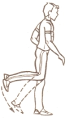

3.1.4 Ептілік пен иілгіштікті дамыту
Ептілік – қимыл-қозғалыс қабілеттерінің кешенінен құралған дене сапасы және ептілікті дербес емес, басқа сапалармен бірге дамыту керек. Ал дене сапаларын дамытатын басты құрал – дене жаттығулары. Ептілікті дамытуға қозғалмалы ойындар мен спорт ойындарының элементтерін қолдануға болады. Сондықтан баскетбол, волейбол, футбол, үстел теннисі, ортаға түспек секілді ойын түрлерімен жүйелі шұғылдану керек. Сонымен қатар, жазық дала, кедір-бұдырлы жерлермен жүгіру, кедергілерден өтіп жүгіру, таудан шаңғымен құлдилау және арқанға (ағашқа) өрмелеу секілді дербес орындалатын қимыл-қозғалыс белсенділігі де ептілікті дамытады, жетілдіреді.
Жаңа қимыл түрін игеру қабілетін дамыту үшін, орындалатын дене жаттығуларының құрамына жаңа қимыл-әрекет түрлерін енгізіп отыру керек. Себебі бір қимылды қайта-қайта қайталай берген жағдайда ептілік жоғала бастайды. Сондықтан таңертеңгілік гигиеналық гимнастика жаттығулары құрамына, дене жаттығуларымен өз бетімен шұғылданған кезде, сондай-ақ дене шынықтыру сабақтарын өткізген кезде жаттығулардың орындалу күрделілігін қиындатып, шұғылданушыларға жаңа тапсырмалар беріп отыру қажет. Мысалы, аяқтың бұлшықеттерін қыздыру үшін отырып-тұру жаттығуын жасау, ал 2-3 апта өткен соң, бұлшықеттерге дәл солай әсер ететін басқа жаттығуларды қолдану (бір аяқпен жүрелей ашып отырып-тұру; аяқты кең ашып отырып-тұру, қол желкеде және т.с.с).
Бұрыннан таныс жаттығуларды түрлендіре отырып, бұлшықеттерді жұмыс істетудің тәсілдері сан-алуан. Мысалы, бір орында секіру, бір қапталға секіру, аяқты бірге қойып және ашып секіру; гимнастикалық снарядтарды (доп, ұршық) түрлі қашықтыққа, әртүрлі тәсілдермен лақтыру, домалатып жіберу, лақтырып және қайтадан қағып алу және т.б. Аталған жаттығулардың барлығын назардан шығармай орындау арқылы көздің бұлшықеттері дамиды. Яғни, көру қабілеті төмендеп кеткен студенттер осы жаттығуларды жасау арқылы өз денсаулықтарын түзей алады.
Қимыл-қозғалыс үйлесімділігін дамытуға арналған жаттығулар үлгісі
Қимыл-қозғалыс үйлесімділігін дамытуға түрлі гимнастикалық жабдықтармен орындалатын жаттығулар, жұптасып орындалатын және басқа да жаттығулар қолданылады. Жаттығулардың саны біртіндеп ұлғая береді. Алғашқыда жаттығуларды 2 санға, үйрене келе 4-6-8-10-12-16 санға дейін орындайтын болады. Мысалы, б.қ. – аяқ бірге, қол белде. 1 – оң қол алға, 2 – сол қол алға, 3 – оң қол жоғары, 4 – сол қол жоғары, 5 – оң қол қапталға, 6 – сол қол қапталға, 7 – оң қол белге, 8 – сол қол белге, 9 – оң аяқпен оңға адымдау, 10 – сол аяқпен солға адымдау, 11 – оң қол қапталға, 12 – сол аяқ қапталға, 13-14-15 алға еңкею, 16 – б.қ., қол белде.
Аталған жаттығу кешенін толығымен игерген соң, бір орында секіру, аяқ-қолды түрлі бағытта сермеу мен қозғау арқылы жаттығудың қарқынын арттыруға болады. Тиісінше, жаттығуларды жасау саны (есебі) да ұлғаяды.
Қимыл-қозғалыстың дәлдігін дамытуға арналған жаттығулар үлгісі
Жаттығудың жасалу бағыты мен амплитудасы дәл сақталуы керек. Мысалы, қолды алға көтерген кезде, оның дәл кеуде алдынан көтерілуін, ал «қол алға» қалпын қабылдаған кезде қолдың түзу және иық деңгейінде болуын қадағалау керек.
Түрлі спорттық жабдықтарды дәлдікке және әртүрлі биіктікке лақтыру арқылы дәлдік пен ептілікті дамытуға болады. Сонымен қатар, түрлі жаттығуларды араластырып орындау арқылы да аталған сапаларды дамытуға болады. Мысалы, салмағы әртүрлі затты (қалтаға салынған құм, нығыздалған доп) белгілі бір биіктікке лақтыру немесе белгілі бір нысананы көздеп лақтыру. Ол үшін салмағы әртүрлі 6 жүкті мынадай ретпен лақтыруға болады: 1; 3,5; 3; 1,5; 2,5; 2 кг және т.с.с.
Қозғалыс кезіндегі дененің тұрақтылығын сақтай білу (яғни, өз денесінің тепе-теңдігін сақтай алу) қабілетін дамытуға арналған жаттығулар
Аталған қабілетті дамыту үшін бір сызық бойымен алға, артқа, бір қапталмен жүру; дәл солай, тек аударылып қойылған гимнастикалық орындықтың қырымен жүру; гимнастикалық бөренемен жүру секілді жаттығуларды орындау керек. Қолдың бастапқы қалпын өзгерту арқылы жаттығуды күрделендіруге болады: қол белде, иықта, төменде, желкеде, екі жақта және т.б.
Түрлі биіктікке ілінген жіп, доп, гимнастикалық орындықтардан аттап өту, бір немесе екі қолмен салмағы әртүрлі жүк тасымалдау жаттығулары да тепе-теңдікті сақтау қабілетін арттырады. Сонымен бірге, теңселіп тұратын жабдықтың үстімен жүру де пайдалы. Тек олардың мықтап орнатылғандығын тексеру керек.
Қозғалыссыз тұрып дененің тұрақтылығын сақтау қабілетін дамытуға арналған жаттығулар үлгісі
Қозғалыссыз қалыптағы тұрақтылықты дамыту үшін екі жаттығулар тобы пайдаланылады.
Біріншісі, таянып тұру аумағы шектеулі жерде 3-5 минут қозғалыссыз тұры. Мысалы, гимнастикалық бөрене, гимнастикалық орындықтың қыры немесе нығыздалған доптың үстінде бір және екі аяқпен тұру. Ондай жаттығуларды үйде жасау керек болған кезде бір аяқпен түрлі қалыпта тұруға болады. Мысалы, сол аяқпен тұру, оң аяқтың табаны сол аяқтың тізесіне қойылған, қол белде; бір аяқпен тұру, қол екі жақта, оң аяқ артқа созылған. Жаттығуды алғашқыда бір аяқпен, үйрене келе екінші аяқпен де орындау керек.
Дене тұрақтылығын ұзақ уақыт сақтау үшін, назарды басқаға аудармай, көлденең биіктіктегі шартты нүктеге қарап тұру керек. Мысалы, бөренеде тұрған кезде гимнастикалық қабырғаға байланған секіргішке қарап тұруға болады.
Екінші жаттығулар тобы тепе-теңдікті әдейі жоғалтып, қайтадан тұрақты қалыпқа келу қабілетін шыңдауға бағытталған. Мысалы, бөренеде тұрып бір қапталға (алға, артқа шалқаю) еңкею және жылдам бастапқы қалыпты қабылдау.
Тепе-теңдікті сақтай білу қабілетін дамыту үшін, дененің тұрақты қалыпты сақтауын қаматамасыз ететін вестибулярлы аппарат қызметін нығайту керек. Ол үшін тура бағытпен немесе алаңды айнала 30-50 м жүгіру, бір орында тұрып оңға және сол бұрылу, бір орында секіріп, 45, 90, 180 және 360° бұрылу жаттығуларын жасау керек. Дененің тік қалпын сақтап тұрып басты оңға және солға бұру (басты бұру мен айналдыру санын 20-30 дейін ұлғайту керек); түрлі қалыпта отырып (тұрып), 2-4 рет тоқтамастан алға және артқа аунау.
Бұлшықетті босаңсыта білу қабілетін дамытуға арналған жаттығулар үлгісі
Ол үшін қолды, аяқты сілкілеу, иық белдеуін дірілдету жаттығуларын қолдануға болады. Жаттығуларды баяу қарқында 4-6 рет қайталау керек. Төменде бұлшықетті босаңсытуды үйретуге арналған жаттығулар кешенін ұсынамыз.
Қолдың бұлшықеттерін босаңсытуға арналған жаттығу-лар үлгісі
1. Б.қ. – аяқ иық деңгейінде, қол жоғары. Қолдың бұлшықеттерін босатып, алақан, білек, қолды ретімен бүгу және алға еңкейіп, қолды сілкілеу (дем шығару). Б.қ. қайта келу, дем тарту (55-сурет).
55-сурет. Қолды сілкілеу арқылы денені босаңсыту жаттығуы
2. Б.қ. – аяқты ашып тұру, қол жоғарыда және екі жақта. Қолдың бұлшықеттерін босату және алға – төмен құлатып, сілкілеу (дем шығару). Б.қ. қайта келу, дем тарту (56-сурет).
56-сурет. Қолды екі жақтан ашып тұрып төмен түсіріп сілкілеу
3. Б.қ. – аяқты ашып тұру, бір қол алдыда, екіншісі артта. Қолды етпеттеп кроль тәсілімен жүзуге ұқсата қозғап алға-артқа қимылдату. Бұлшықеттер босаңсыған күйде, тыныс алу еркін орындалады (57-сурет).
57-сурет. Қолды кроль тәсілімен жүзу кезіндегідей еркін қозғау
4. Б.қ. – аяқты ашып тұру, қол екі жақта. Алға еңкейіп тұрып, босаңсыған қолды кеуде алдында қайшылап қозғау (дем шығару). Б.қ. қайта келу (дем тарту).
5. Б.қ. – н.т. алға еңкею, қол бұлшықеттерін босату, иықты жоғары-төмен еркін қозғау (дем шығару). Б.қ. қайта келу (дем тарту).
6. Б.қ. – аяқты ашып тұру, қол босаңсыған. Еркін қозғалған қолмен кеудені оңға және солға бұру. Тыныс алу еркін.
Кеуде бұлшықеттерін босатуға арналған жаттығулар үлгісі
1. Б.қ. – аяқты ашып тұру, шынтақтан бүгілген қол кеуде алдында. Шынтақты артқа шығару және жауырынды бір-біріне жақындату; қол мен арқа бұлшықеттерін босату және сәл алға еңкейіп, қолды төмен «құлату» (дем шығару). Б.қ. қайта келу (дем тарту).
2. Б.қ. – аяқты ашып тұру, алға еңкею, қол екі жақта. Кеуде және қол бұлшықеттерін босатып, қолды төмен «құлату» және сілкілеу. Тыныс алу еркін.
3. Б.қ. – н.т. Кеуде мен қолдың бұлшықеттерін босатып алға еңкею (дем шығару). Б.қ. қайта келу (дем тарту)
Аяқ бұлшықеттерін босатуға арналған жаттығулар үлгісі
- Б.қ. – сол қолмен сүйеніп тұру, оң қол сәл бүгілген. Бұлшықеттері босаңсыған оң аяқты еркін сермеу. Дәл солай, тек оң қолмен сүйеніп тұрып, сол аяқты сермеу. Тыныс алу еркін орындалады (58-сурет).

58-сурет. Сүйеніп тұрып бір аяқты сермеу
- Б.қ. – дәл солай. Тізеден бүгілген, бұлшықеттері босатылған оң аяқты алға және артқа сермеу. Артқа шығарылған кезде тіктеп, тізеден бүгілген күйде қайтадан алға сермеу. Дәл солай, тек сол аяқпен. Тыныс алу еркін орындалады.
- Б.қ. – н.т. Бос тұрған оң аяқты сілкіліп тұрып, сол аяқпен жеңіл секірулер. Дәл солай, тек оң аяқпен секіру. Тыныс алу еркін орындалады.
- Б.қ. – арқада жату, қол екі жақта немесе дене бойымен, алақан төмен қаратылған, аяқ жоғары көтерілген. Осы қалыпта аяқты босатып сілкілеу. Тыныс алу еркін орындалады.
- Б.қ. – Қолмен арқадан демеп, жауырынға тұру. Жоғары көтерілген және босаңсыған аяқты сілкілеу. Тыныс алу еркін (59-сурет).
59-сурет. Жауырында тұрып аяқты сілкілеу
Ептілікті дамыту үшін бір жаттығуды бірнеше рет сериялармен қайталау керек немесе бір қимылды қажу сезімі пайда болғанша жасайды. Ондай жаттығуларды жасаған кездегі үзіліс, шұғылданушы алдыңғы жасаған қимылдарынан туындайтын қажуды сезбейтіндей болуы керек. Жаттығу түрлеріне қарай, олардың арасындағы үзілістің де ұзақтығы әртүрлі болады. Мысалы, бөренеден жүріп өткен соң келесі қайталау 30 секундтан кейін болса, 3 минут бір аяқпен тұру жаттығуынан соң 3-4 минуттық үзіліс керек. Сонымен қатар, шұғылданушы өзінің қажуды сезу жағдайына қарай әрекет етеді.
Омыртқа жотасының қозғалмалылығын дамытуға арналған жаттығулар үлгісі
- Б.қ. – аяқ иық деңгейінде, қол төменде, белде немесе жоғарыда. Тізені бүкпей алға еңкею (дем шығару). Б.қ. қайта келу (дем тарту).
- Б.қ. – дәл солай. Тізені бүкпей тербеле серпіліп, алға 3 рет еңкею (дем шығару). Б.қ. қайта келу (дем тарту).
- Б.қ. – аяқ бірге немесе иық деңгейінде, қол белде. Оңға қисаю (дем шығару). Б.қ. қайта келу (дем тарту). Дәл солай, тек солға.
- Б.қ. – дәл солай. Тізені бүкпей тербеле серпіліп, оңға қисаю (дем шығару). Б.қ. қайта келу (дем тарту). Дәл солай, тек солға.
- Б.қ. – аяқ бірге немесе иық деңгейінде, қол белде. Сол қолды оңға сермеп, оңға қисаю (дем шығару). Б.қ. қайта келу (дем тарту). Дәл солай солға, тек оң қолды солға сермеп.
- Б.қ. – дәл солай. Оң қолды солға сермеп, белден серпіле қисаю (дем шығару). Б.қ. қайта келу (дем тарту). Дәл солай, оңға.
- Б.қ. – аяқ бірге немесе иық деңгейінде, қол белде. Оңға бұрылу, қол екі жақта (дем шығару). Б.қ. қайта келу (дем тарту). Дәл солай, тек солға (60-сурет).
60-сурет. Қолды екі жаққа шығарып оңға-солға бұрылу
- Дәл солай, тек бастапқы қалыпта қол екі жақта.
- Б.қ. – дәл солай. Денені серпе бұрып, оңға бұрылу (дем шығару). Б.қ. қайта келу (дем тарту). Дәл солай солға.
- Б.қ. – аяқты ашып тұру, қол екі жақта. Солға бұрылып алға еңкею, оң қолының саусақтарын сол аяғының ұшына тигізу, сол қол жоғарыда (дем шығару). Б.қ. қайта келу (дем тарту). Дәл солай, тек екінші жаққа (61-сурет).
61-сурет. Кеудені бұра еңкею
- Б.қ. – аяқ бірге немесе иық деңгейінде, қол белде немесе алға созылған және саусақтар айқастырылған. Алға еңкею, кеудені шеңбер бойымен оңға, содан соң солға айналдыру. Тыныс алу еркін орындалады.

62-сурет. Еңкейіп тұрып кеудені шеңбер бойымен айналдыру
- Б.қ. – отыру, аяқ бірге немесе екі жаққа ашылған, қол белде. Қолды созып, алға еңкею – дем шығару. Б.қ. қайта келу – дем тарту (63-сурет).
63-сурет. Отырып алға созыла еңкею
13. Б.қ. – дәл солай. Қолды алға созып, кеудені серпе алға еңкею (дем шығару). Б.қ. қайта келу (дем тарту).
- Б.қ. – аяқты ашып отыру. Сол аяққа еңкейіп, саусақтарды аяқ ұшын тигізу (дем шығару). Б.қ. қайта келу (дем тарту). Дәл солай, тек оң аяққа еңкею (64-сурет).
64-сурет. Алға созыла еңкейіп, саусақты аяқтың ұшына тигізу
- Б.қ. – дәл солай. Сол аяққа кеудемен серпіле еңкейіп, саусақты аяқты ұшына тигізу (дем шығару). Б.қ. қайта келу (дем тарту). Дәл солай, тек оң аяққа еңкею.
- Б.қ. – арқада жату, қол екі жақта, алақан еденге қаратылған. Тік аяқта көтеріп, аяқтың ұшын кеуденің алдынан еденге тигізу (дем шығару). Б.қ. қайта келу, дем тарту (65-сурет).
65-сурет. Арқада жатып яқты көтеріп, кеуде алдына түсіру
Жамбас белдеуінің қозғалмалылығын дамытуға арналған жаттығулар үлгісі
- Б.қ. – аяқ бірге немесе иық деңгейінде. Қол алдыда. Оң аяқтың ұшын сол қолдың саусақтарына тигізу (дем шығару). Б.қ. қайта келу (дем тарту). Дәл солай, екінші аяқпен (66-сурет).

66-сурет. Тік аяқты алға көтеру
- Б.қ. – сол қолмен сүйеніп тұру. Оі аяқты алға-артқа сермеу. Б.қ. қайта келу. Оң қолмен сүйеніп тұрып, сол аяқпен қайталау. Тыныс алу еркін орындалады (67-сурет).
67-сурет. Сүйеніп тұрып аяқты алға-артқа сермеу
- Б.қ. – екі қолмен сүйеніп тұру. Оң аяқты оңға-солға сермеу. Б.қ. қайта келу. Дәл солай сол аяқты сермеу. Тыныс алу еркін орындалады (68-сурет).
68-сурет. Аяқты оңға-солға сермеу
Иық белдеуінің қозғалмалылығын дамытуға арналған жаттығулар үлгісі
- Б.қ. – аяқ бірге немесе иық деңгейінде, қол алға созылған, алақандар бір-біріне қаратылған. Қолды жұлқа қозғап, екі жаққа ашу (дем тарту). Б.қ. қайта келу (дем шығару).
- Б.қ. – дәл солай. Қолды қатарынан 2 рет жұлқа қозғау (дем тарту). Б.қ. қайта келу (дем шығару).
- Б.қ. – дәл солай. Екі қолды жұлқа қозғап жоғары көтеру (дем тарту). Б.қ. қайта келу, дем шығару (69-сурет).
69-сурет. Қолды жоғары жұлқа көтеру
- Б.қ. – дәл солай. Қолды жоғарыға екі рет қатарынан жұлқа көтеру (дем тарту). Б.қ. қайта келу (дем шығару).
- Б.қ. – аяқ бірге немесе иық деңгейінде, оң қол жоғарыда, сол қол төменде. Қолды жұлқа қозғап, орналасу қалыптарын өзгерту. Тыныс алу еркін орындалады.
- Б.қ. – аяқ бірге немесе иық деңгейінде, оң қол жоғарыда, сол қол төменде. Қолды қатарынан екі рет жұлқа қозғап, орналасу қалыптарын өзгерту. Тыныс алу еркін орындалады.
- Б.қ. – – аяқ бірге немесе иық деңгейінде, шынтақтан бүгілген қол кеуде алдында. Бүгілген қолды екі жаққа жұлқа шығару, тіктелген қолды екі жаққа жұлқа шығару. Тыныс алу еркін орындалады (70-сурет).
70-сурет. Бүгілген және жазылған қолды екі жаққа жұлқа шығару
- Б.қ. – аяқ бірге немесе иық деңгейінде, қол иықта. Бүгілген қолды алға, содан соң артқа айналдыру. Тыныс алу еркін орындалады (71-сурет).

71-сурет. Иыққа қойылған қолды алға-артқа айналдыру
- Б.қ. – аяқ бірге немесе иық деңгейінде, қол алға. Тік қолды алға, содан соң артқа айналыру. Тыныс алу еркін орындалады.
Батпан қолдана отырып жоғарыда ұсынылған жаттығуларды күрделендіруге болады. Иілгіштікті дамыту жаттығуларын орындаған кезде, әр жаттығуды 6-8 рет қайталап, 4-5 мәрте орындау керек. Қимылдың орындалу амплитудасын біртіндеп ұлғайтып, дененің (буынның) иілгіштік қасиетін жақсарту керек. Мысалы, аяқты бірге қойып алға еңкейген кезде, алғашқы мүмкіндікте саусақтың ұшын сираққа тигізсе, екіншісінде тобыққа тигізу керек. Ал үшіншісінде – аяқтың ұшына, төртіншісінде – еденге, бесіншісінде бүгілген саусақтарды тигізу керек.
Екінші мәрте қайталаған кезде саусақтың ұшын сираққа, содан кейін – алақанды еденге қою керек.
Үлкен амплитудалы жаттығуларды жасаған кезде кейде аздаған ауырсыну сезімі пайда болуы мүмкін. Ондай жағдайда жаттығуды шұғыл тоқтату керек. Бірақ ауырсыну сезімі пайда болады екен деп жаттығуды сылбыр орындауға да болмайды.
Үлгі. Бір қолмен сүйеніп тұрып оң (сол) аяқты сермеу. Бірінші рет әр аяқты қатарынан 6 рет сермеу. Шұғылданушы сермеудің ең биік нүктесінде аяғын белгілі бір нүктеге жеткізді. Екінші және үшінші рет сермеген кезде одан да биік көтерді. Төртінші, бесінші және алтыншы сермеген кезде ондай биіктікке көтере алмады. Тіпті бірінші нүктеге жеткізе алмады делік. Ондай жағдайда бұл жаттығуды тоқтату керек. Себебі сіңірдің созылуы, бұлшықеттің жыртылуы секілді жарақат түрлері пайда болуы мүмкін.
Иілгіштікті дамыту үшін, денені айтылған (көрсетілген) амплитудада иіп, сол статикалық қалыпты (қозғалыссыз) 25-30 секунд ұстауға болады. Мысалы, аяқты бірге ұстап алға еңкейіп, саусақтың ұшын еденге тигізген соң, қолмен аяқты қапсыра құшақтап тұру.
Қимыл-қозғалыс амплитудасын үнемі ұлғайта беру мүмкін емес. Ол күнделікті өмірде (қимыл-қозғалыс белсенділігі кезінде) белгілі бір әрекетті орындау кезінде қажет амплитудадан сәл жоғары болса жеткілікті. Мысалы, алға еңкейіп, саусақтың ұшын еденге тигізу үшін керек иілгіштікке қол жеткізу үшін, оқу-жаттығу сабақтарында алақанды еденге қоятын деңгейге иілу жеткілікті. Шамадан тыс иілгіштік буын ауруларына шалдықтырып, ағзаның қалыпты қызмет етуіне зиянын тигізуі мүмкін.
Дене сапаларын дамыту бойынша әдістемелік нұсқаулар
Егер оқу-жаттығу сабағында тек бір дене сапасын (мысалы, күш немесе төзімділікті) дамыту жоспарланған болса, қыздырыну жаттығуларынан соң жоспарға сәйкес келетін жаттығуларды қолдану керек. Мысалы, дененің барлық мүшелерінің күш сапасын дамытуға аранлған жаттығулар немесе 7-10 минут жүгіру жаттығуларын қолдану. Сабақтың ұзақтығы 45 немесе 60 миунт болса, негізгі жаттығуларға тиісінше 32-34 және 47-50 минуттар қолданылады.
Белсенді дене қимылдарынан кейін қызған ағзаны қалыпты жағдайға келтіріп, ақыл-ой жұмысына немесе келесі қызметті атқаруға кірісу үшін белгілі бір уақыт керек. Оған кететін уақытты қысқартуға және келесі әрекетке ретімен көшуге арнайы жаттығулар көмектеседі. Ол үшін тыныс алу және денені босаңсыту жаттығуларын қолдануға болады.
Өз бетімен дене жаттығуларымен шұғылдану дегеніміз, таңертеңгілік гигиеналық гимнастика және бос уақытта жүргізілетін дене тәрбиесі. Кітапты ұзақ уақыт оқыған, жазба жұмыстарымен шұғылданған және компьютердің алдында тапжылмай отырған кезде адамның бойында қажу сезімі пайда болады (әдетте қозғалмай 50-60 минут отырған соң). Міне, сол кезде белсенді үзіліс жариялаған дұрыс. Ол үзіліс кезінде басқа кітапты оқу, жәй отыру немесе әріптесімен әңгімелесіп отыратын болса, қалпына келу үдерісі баяу жүзеге асырылады. Сылбыр демалыстан соң сергіп қалу қиын. Ал дене белсенділігінен соң адамның бойы сергіп, өз қызметін жалғастыруға ынтасы артады. Сондықтан да өндіріс орындарында, статикалық қалыпта ұзақ жұмыс істейтіндерге сергу жаттығулары (үзілістер) ұсынылады. Ондай сергу үзілістерінің ұзақтығы 4-6 минутты құрайды. Кешен 5-6 жаттығудан құралуы мүмкін. Сергу жаттығуларын тартылу, керілу, созылудан бастап, тыныс алу немесе денені босаңсыту жаттығуларымен аяқтау керек. Ол жаттығулар ауыр жүктемемен орындалмауы керек. Себебі, оның салдарынан қажу сезімі жойылмай, тіпті ұлғайып кетуі мүмкін. Ұзақ мерзімді ақыл-ой жұмысынан соң орындалатын қимыл-қозғалыс жаттығулары қанайналым үдерісін жақсартып, омыртқа жотасының қисаюына жол бермейді.
Төменде сергіту үзілістерінде жасауға болатын жаттығулар үлгісі ұсынлады.
1. Сергіту жаттығулары
1. Б.қ. – н.т. Қолды екі қапталдан жоғары және аяқ ұшына көтерілу, созылу (дем тарту). Б.қ. қайта келу (дем шығару). Баяу қарқынмен 7-8 рет қайталау.
- Б.қ. – н.т. Алға еңкею (дем шығару). Б.қ. қайта келу (дем тарту). Баяу қарқында 10 рет қайталау.
- Б.қ. – арқада жату, қол желкеде. Кеудені көтеру (дем шығару). Б.қ. қайта келу (дем тарту). Баяу қарқында 10-12 рет қайталау.
- Б.қ. – төмен аспада ілініп жату және тартылу. Тыныс алу еркін. Баяу қарқында 8-10 рет қайталау.
- Секіргіш жіппен (секіргіш жіпсіз) секіру. Тыныс алу еркін орындалады. Баяу қарқында 15 рет қайталап, 30 секунд асықпай жүру.
6. Б.қ. – аяқты ашып тұру, шынтақтан бүгілген қол кеуде алдында. Шынтақты артқа шығарып, жауырынды бір-біріне жақындату; қол мен арқа бұлшықеттерін босатып, сәл алға еңкейіп қолды төмен түсіру. Тыныс алу еркін орындалады. 4-6 рет қайталау.
2. Көкірек қуысының желдену қабілетін дамытуға арналған тыныс алу жаттығуларының үлгісі
1. Б.қ. – аяқты ашып тұру, қол екі жақта, алақан сыртқа қаратылған. Аяқ ұшына көтерілу және кеудеден артқа керіле-шалқаю (дем тарту). Б.қ. қайта келу (дем шығару). 7-8 рет қайталау.
2. Б.қ. – аяқты ашып тұру. Оң қолды бір қапталмен бастан асыра көтеру, сол қолды арқаға қою. Қолдың қалпын өзгерту, қайталау. Тыныс алу еркін. 8-10 рет қайталау.
3. Б.қ. – аяқты шаып тұру, қол белде. Алға еңкею, қол екі жаққа (дем шығару). Б.қ. қайта келу (дем тарту). 8-10 рет қайталау.
- Б.қ. – аяқты ашып тұру, қол белде. Оң аяқты оңға сермеу. Б.қ. қайта келу. Дәл солай, сол аяқпен солға қайталау. Тыныс алу еркін орындалады. 6-8 рет қайталау.
- Б.қ. – н.т. Жүрелей отырып, қолды еденге тигізу (дем шығару). Б.қ. қайта келу. 8-10 рет қайталау.
- Б.қ. – аяқты ашып тұру, қол екі жақта. Денені босатып кеудені алға «құлату», қолды сілкілеу. Тыныс алу еркін орындалады.
Дене жаттығуларын белсенді орындаған кезде, дененің бір мүшесін жарақаттап алу қаупі туындауы мүмкін. Ондай жағдайды болдырмау үшін бірқатар талаптарды сақтау керек:
- жаттығатын жерді даярлау;
- спорттық жабдықтың жарамдылығын тексеру;
- спорттық киімнің сабаққа сәйкес келуін ескеру;
- жаттығуды жасау кезіндегі денсаулық жағдайын үнемі қадағалау.
3. Лифтинг-гимнастика бойынша орындалатын қалпына келтіру жаттығуларының үлгісі (бұлшықеттерді нығайту және тері қабатын қалпына келтіретін жаттығулар)
Лифтинг-гимнастика бұлшықет көлемін ұлғайту, терінің созылмалығы мен серпімділігін қалпына келтіруге ықпал етеді [22].
№1-жаттығу
Жаттығудың мақсаты: құрсақ бұлшықеттерін нығайту; сан, жамбас, иық және білек бұлшықеттерін сергіту; арқаны босаңсыту.
Орындалу тәртібі
- Тізені бүгіп отыру, табан еденде, аяқ иық деңгейінде.
- Қолмен аяқты құшақтау.
- Арқаны тіктеу, жоғарыға созылу және омыртқаның созылуын сезіну.
- Қолмен көмектесе отырып, тобық еденге парралелді болатындай етіп аяқты көтеру. Қол, аяқ және жамбас белдеуінің бұлшықеттері қатайтылған қалыпта болады.
- Осы қалыпта баяу демді тарту керек және баяу демді шығарып, құрсақты арқаға қарай тарту; арқаны бүкірейтіп, сәл артқа шалқаю.
- Дем тартқа кезде тіктелу. Жаттығу 5-10 рет қайталанады.
№2-жаттығу
Мақсаты: білектің бұлшықетін нығайту, құрсақ пен аяқтың бұлшықеттерін сергіту, ырғақты тыныс алуды реттеу.
Орындалу реті
- Білекпен таянып, жартылай жату қалпын қабылдау.
- Тізені бүгу. Созылған аяқтың ұшы еденге тиер-тимес қалыпта, аяқ бірге және бұлшықеттері қатайтылған.
- Дем тарту және құрсақты артқа тарту, тізеден бүгілген аяқты оңға бұру.
- Дем шығару және аяқты диагонал бойымен қозғай отырып тіктеу. Аяқ ұшы созылған.
- Дем тарту және тізені бүгу.
- Дем шығару және б.қ. қайта келу.
- Дәл солай екінші жаққа қайталау. Екі жаққа 6-10 рет қайталанады.
№3-жаттығу
Мақсаты: мойын және құрсақ бұлшықеттерін ығайту, омыртқа жотасының қозғалмалылығын дамыту, білек және аяқ бұлшықеттерін сергіту.
- Арқада жату, қол желкеде.
- Аяқты тізеден бүгіп, тобықты еденге параллелді ұстау, аяқ ұшы созылған.
- Кіндікті көре алатындайы биіктікке бас, мойын және жауырынды көтеру.
- Ішті артқа тартып дем тарту.
- Дем шығарған кезде сол аяқты 45° бұрышпен тіктеу және белден шалқаймай, кеудені оңға соза керілу, шынтақ бір-біріне қосылмайды.
- Дем тарту.
- Дем шығарған кезде кеудені б.қ. қайта әкелу.
- Дәл солай екінші жаққа қайталау. Екі жаққа 2-10 рет қайталанады.
№4-жаттығу
Мақсаты: мойын, білек, аяқ бұлшықеттерін сергіту; құрсақ және арқа бұлшықеттерін нығайту; дұрыс тыныс алуды үйрету.
Орындалу реті
- Төртағандап тұрып білекпен таяну.
- Тіктелу және аяқты кезегімен артқа созу. Аяқтың ұшы мен бас бір сызық бойында болатындай созылу керек («көпір» қалпын қабылдау).
- Дем тарту.
- Баяу дем тартқан кезде «көпір» көтеріледі: сан баяу жоғары көтеріледі, ал бас төмен түседі (бірақ еденге тиер-тимес аралықта болады).
- Дем тартқан кезде тура «көпір» қалпын қабылдау. Жаттығу 2-10 рет қайталанады.
Мақсаты: білек пен құрсақ бұлшықеттерін нығайту, мойын, жамбас және білек бұлшықеттерін сергіту, белдің мүсінін қалыптастыру.
Орындалу реті
- Тізені бүгіп оң жамбасқа отыру, оң қолмен таяну (қол тік болуы керек).
- Сол қол сол тізеде.
- Дем тарту.
- Дем шығарған кезде оң қолмен едненнен итеріліп, санды көтеру және сол қолды жоғарыға созу.
- «Т» әрпінің қалпында дем тарту.
- Дем шығарған кезде бастапқы қалыпқа қайта келу.
- Дәл солай екінші жаққа қайталау. Жаттығу екі жаққа 4-10 реттен қайталанады.
№6-жаттығу
Мақсаты: мойын мен білек бұлшықеттерін сергіту, арқа, аяқ және құрсақ бұлшықеттерін нығайту.
Орындалу тәртібі
- Тік қолмен еденге таяну және білезік буыны иықтың астында болатындай төрттағандап тұру, тізе санмен бір сызық бойында болуы керек.
- Екі аяқты кезегімен тіктеу және артқа созу, аяқ ұшы бірге.
- Ұзыннан созылған дене салыстырмалы түрде алғанда сәл еңіс орнатылған тік сызықты құрауы керек.
- Дем тартқан кезде оң аяқты сан деңгейіне дейін көтеру (бұлшықеттер қатайтылған), аяқтың ұшы созылған.
- Дем тартқан кезде аяқты бастапқы қалыпқа түсіру.
- Дәл солай екінші аяқпен қайталау. Жаттығу әр аяқпен 5-10 рет қайталанады.
№7-жаттығу
Орындалу тәртібі
- Аяқ иық деңгейінде, қол екі жақта.
- Қолды созу, саусақтарды қатайту, алақан төмен қаратылған.
- Дем тарту және құрсақты артқа тарту.
- Дем шығару және кеудені оңға бұру. Бұрылған кезде аяқ қозғалыссыз және тізе бүгілмеуін қадағалау.
- Бұрылған қалыпта дем тарту.
- Дем шығару және бастапқы қалыпқа қайта келу.
- Дәл солай екінші қапталға қайталау. Жаттығу екі жаққа 10-20 реттен қайталанады.
№8-жаттығу
Мақсаты: мойын бұлшықеттерін сергіту, құрсақ бұлшыеқттерін нығайту, аяқ пен қолдың бұлшықеттерін созу.
Орындалу тәртібі
- Арқада жату, аяқ тізеден бүгілген, санды сырт жағынан қапсара құшақтап, кеудеге тарту.
- Құрсақты ішке тартып дем тарту.
- Дем шығару кезінде бас пен иықты баяу еденнен ажырату және кіндік назарға ілнгенге дейін басты көтеру.
- Дем тарту кезінде қолды денге қатысты 45 градусқа тіктеу. Қол мен аяқты тарта отырып созылу (жерді жарып шығып шыққан гүлдің қимылын елестету керек).
- Тартылу жаттығуларын жасаған кезде аяқ пен қолдың бұлшықеттері қатайтылған болуын қадағалау керек.
- Дем шығарған кезде бастапқы қалыпқа қайта келу керек.
№9-жаттығу
Мақсаты: құрсақ бұлшықеттерін нығайту, мойын, арқа және білек бұлшықеттеерін сергіту.
Орындалу тәртібі
- Арқада жату, аяқ тізеден бүгілген, шынтақтаған бүгілген қол желкеде.
- Дем тартқан кезде құрсақты артқа тарту және баяу кеудені жауырынға қарай бұру. Басты мүмкіндігінше жоғары көтеріп омыртқа жотасын созу.
- Дем шығарған кезде бастапқы қалыпқа қайта келу.
- Құрсақтың бұлшықеттерін нығайту үшін де сол қимылдар қайталанады, тек тізеден бүгілген аяқты кеуденің сол жағында, содан соң оң жағында ұстау керек.
№10-жаттығу
Мақсаты: жамбас белдеуі және сан бұлшықеттерін нығайту, аяқ, қол және арқа бұлшықеттерін сергіту, қимыл-қозғалыс үйлесімділігін жақсарту, жамбас белдеуінің қозғалмалылығын дамыту.
Орындалу тәртібі
- Бір бүйірмен жатып созылу.
- Білекке таяну.
- Оң аяқты тізеден бүгу және сол аяқтың алдына шығару.
- Дем тартқан кезде құрсақты артқа тарту және баяу сол аяқты көтеру (мүмкіндігінше биік көтеру).
- Дем шығарған кезде аяқты төмен түсіру.
- Дәл солай екінші бүйірде жатып қайталау.
№11-жаттығу
Мақсаты: құрсақ бұлшықеттерін сергіту, санның бұлшықеттерін нығайту, қимыл-қозғалыс үйлесімділігін жақсарту.
Орындалу тәртібі
- Бір бүйірмен жату және білекпен таяну.
- Дем тартқан кезде оң аяқты 45 градус бұрышпен көтеру. Аяқ ұшын созу.
- Дем шығарған кезде аяқты серпе сермеу. Аяқ тізеден бүгілмейді.
5-7. Дем тартқан кезде аяқты жамбас деңгейінде тіктеу, аяқ ұшын өзіне тарту және тік аяқты көз алдына әкелу, аяқты серпе сермеу.
8. Дем шығарған кезде бастапқы қалыпқа қайта келу.
№12-жаттығу
Мақсаты: білек, құрсақ, мойын бұлшықеттерін сергіту, белді әсемдеу, сан бұлшықеттерін нығайту, жамбас буынының қозғалмалылылығын арттыру.
Орындалу тәртібі
- Бір бүйірге жату, созылу, шынтақтан бүгілген қолға басты жатқызу
- Дем тартқан кезде ішті тарту және жоғарыдағы аяқты көтеру. Аяқты тұтасымен созу, аяқ ұшы созылған
- Дем шығарған кезде бастапқы қалыпқа қайта келу.
- Дәл солай екінші бүйірмен қайталау.
- Жаттығуды жасаған кезде жамбас және аяқ бұлшықеттері қатайтылған болуы керек.
Мақсаты: құрсақ бұлшықеттерін нығайту, мойын және білек бұлшықеттерін сергіту, омыртқа жотасының қозғалмалылығын арттыру.
- Арқада жату, қолды жоғары созу, аяқтың ұшын өзіне тарту.
- Дем тартқан кезде жоғары тартылып, омыртқаны созу, ішті артқа тарту.
- Дем шығарған кезде сәл денені босату.
- Дем тартқан кезде ішті артқа тартып, біртіндеп босату
- Қол кеуде тұсында болған кезде омыртқаны бұру – алдымен басты, содан соң мойынды және , омыртқаны еденнен ажырату.
- Кеуде еденмен перпендикулярлы қалыпқа келген кезде дем шығару, ішті артқа тарту.
- Қолмен мүмкіндігінше алға созылу
- Аяқ ұшы созылған.
- Бұрылған жағдайда дем тарту.
- Дәл солай, кері бағытта.
№14-жаттығу
Мақсаты: сан, жамбас бұлшықеттерін нығайту, арға, білек және аяқ бұлшықеттерін сергіту.
Орындалу тәртібі
- Етпеттеп жату. Алақанды қосу, басты жоғарғы қолдың сыртына сүйеу. Мойын мен аяқ ұшы аралығын мүмкіндігінше созу.
- Аяқтарды сәл екі жаққа ашу.
- Дем тартқан кезде аяқты көтеру. Көтеру бармақтан басталады. Тізенің еденге тимеуін қадағалау.
- Дем шығарған кезде өкшені бір-біріне тигізіп, баяу төмен түсіреміз (өкшелерді бір-біріне 5 рет соғу).
№2 кешеннің жаттығулар үлгісі
№1-жаттығу
Мақсаты: қолдың бұлшықеттерін сергіту, арқаның бұлшықеттерін нығайту, белдің әсемдігін қалыптастыру.
Орындалу тәртібі
- Аяқты иық деңгейінде қою, табан бір-біріне параллелді, бос қол дене бойымен төмен түсірілген.
- Қолды бастан асыра жоғары көтеру, алақан бір-біріне қаратылған.
- Дем тартқан кезде мүмкіндігінше төмен солға еңкею, қол тік.
- Еңкейге кезде тек тік, бүкірейтілмеген, назар алға бағытталған. Оң қолдың салмағы кеуденің оң жағын төмен созып, тартылған садаққа ұқсауы керек.
- Тіктелу.
- Дем тартқан кезде жаттығуды оң жаққа қайталау. Жаттығу әр жаққа 10 рет қайталанады.
№2-жаттығу
Мақсаты: құрсақ бұлшықеттерін сергіту, иық және білек бұлшықеттерін нығайту, аяқтың бұлшықеттерін шыңдау, дұрыс дене бітімін қалыптастыру.
Орындалу тәртібі
- Сол аяқты тізеден бүгіп, оң аяқпен тұру.
- Сол аяқтың табаны оң жақта – тізе деңгейінде немесе одан сәл жоғары.
- Бүгілген қолдың саусақтарын айқастырып, бастан асыра көтеру.
- Бая дем тарту кезінде 10-15 дейін санау және алға еңкейген кезде дем шығару.
- Дәл солай, тек сол аяқпен тұрып қайталау. Жаттығу әр аяқпен 2-6 рет қайталанады.
№3-жаттығу
Мақсаты: құрсақ бұлшықеттерін сергіту, жамбас және аяқ бұлшықеттерін нығайту.
Орындалу тәртібі
- Арқада жату, аяқ тізеден бүгілген және тобық тұсынан қапсара құшақтау, табан еденнен ажырамаған.
- Дем тартқан кезде санды мүмкіндігінше биік көтеру.
- Дем шығарған кезде аяқты төмен түсіру.
- Жаттығу бірнеше минут қайталанады.
- Санды соңғы рет биік көтеру және жамбас пен құрсақ бұлшықеттерін қатайта отырып, сол қалыпта қалу.
- Бастапқы қалыпқа қайта келу және денені босаңсыту. Аяқты созу, көзді жұму және денені босаңсыту.
№4-жаттығу
Мақсаты: дұрыс дене бітімін қалыптастыру, арқа бұлшықеттерін нығайту және созу, аяқ бұлшықеттерін сергіту.
Орындалу реті
1. Еденге отыру және табанды бір-біріне қосу.
2. Тобық алақанда болатындай етіп табанды қолмен қапсара ұстау.
3. Баяу дем тарту.
4. Дем шығарған кезде баяу аяққа еңкею.
5 Дем тартқан кезде бастапқы қалыпқа қайта келу.
6 Жаттығу бірнеше минут қайталанады.
7 Содан соң сол қалыпта аздаған уақыт қозғалыссыз қалып, көзді жұму және қырыққа дейін санау.
Мақсаты: дұрыс дене бітімін қалыптастыру, аяқ пен қол бұлшықеттерін нығайту.
Орындалу тәртібі
- Түрегеп тұрып бастапқы қалыпты қабылдау.
- Серіппе тәрізді бұлшықеттерді қатайту, оң қолды алға созу.
- Баяу тыныс алып, саусақтың ұшынан бастап, қол, жауырын және құлаққа дейін өтетін энергияны сезіну.
- Дем шығарған кезде бұлшықеттерді қатайтуды тоқтатпай, энергия ағымын күшейту.
- Денедегі жылуды сезінгенге дейін осы қалыпта болу және сол қолмен қайталау.
№6-жаттығу
Мақсаты: дұрыс дене бітімін қалыптастыру, арқа және қол бұлшықеттерін нығайту.
Орындалу тәртібі
- Өкшеде отыру және маңдай еденге жанасатындай етіп басты алға еңкейту.
- Қолды саусақтармен арқадан айқастыру.
- Дем тарту және иық пен жауырындағы ширығуды сезінетіндей етіп, қолды жоғары көтеру.
- Осы қалыпта 30 секунд болып, мұрын арқылы терең тыныс алу.
- Содан соң қолды одан да биік көтеріп, бұлшықеттердің ширығуының ең жоғары дәрежесіне жету.
- Демді шығару және еденге түсу.
№7-жаттығу
Мақсаты: аяқ пен қолдың бұлшықеттерін нығайту, ақа мен жамбас белдеуінің бұлшықеттерін сергіту.
Орындалу тәртібі
- «Ұшып бара жатқан құс» қалпын қабылдау.
- Кеуде және ішпен терең тыныс алу.
- Тік қолды екі қапталдан жоғары көтеру; оң қол төмендеу, сол қол сәл жоғары (қол тік сызықты бейнелеуі керек).
- Басты сәл оңға бұру.
- Дене қызған немесе тіпті ысығанға дейін осы қалыпта болу.
- Бұлшықеттерді шамадан тыс қатайтуға болмайды.
- Содан соң екінші жақпен қайталанады.
№8-жаттығу
Мақсаты: құрсақ, жамбас және қол бұлшықеттерін нығайту, аяқтың бұлшықеттерін сергіту.
Орындалу тәртібі
- Аяқты созып орындықта отыру.
- Орындықта отырып арттан таяну, саусақтар артқа қаратылған.
- Бас пен аяқтың ұшы тік сызық құрайтындай етіп жамбасты көтеру.
- Терең тыныс алып, осы қалыпта бір минут тұру.
- Еденге жату, көзді жұму және дене бойымен жаттығудан соң туындайтын энергияның «жүгіріп өткенін» сезіну.
№9-жаттығу
Мақсаты: құрсақ және жамбас белдеуінің бұлшықеттерін нығайту, аяқтың бұлшықеттерін сергіту, арқа және мойын бұлшықеттерін дамыту.
Орындалу тәртібі
- Қолды дененің астына қойып, еденге етпеттеп жату.
- Дем тарту және созылған аяқты мүмкіндігінше биік көтеру.
- Терең тыныс алып осы қалыпта 30 секунд тұру.
- Дем шығарған кезде аяқты баяу түсіру, қол дене бойымен.
- Арқаның бұлшықеттерін толығымен босаңсыту. Ешқандай ширығу сезімі болуы керек.
- Етпеттеп бір минут жату және бойға энергияның жиналуын сезіну.
№10-жаттығу
Мақсаты: омыртқа жотасын нығайту, аяқ пен қолдың бұлшықеттерін сергіту, белдің әсемдігін қалыптастыру.
Орындалу тәртібі
- Тік тұру, аяқ иық деңгейінде.
- Қолды жоғары көтеру, шынтақтан бүгу.
- Саусақтарды айқастыра біріктіру және басқа қою.
- Екі жаққа баяу тербелу.
- Сәлден соң қозғалу бағытын алға-артқа өзгерту.
- Денені бос ұстап кеудені алға еңкейту, артқа шалқайту арқылы арқа мен мойын бұлшықеттерін созу.
- Жаттығу 8-10 рет қайталанады.